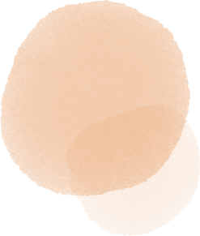

私について
黒田禎乃 宮城県出身 25歳(1997年10月6日生まれ)
四年制大学の食品栄養学科卒業後、
食品会社に入社し、管理栄養士として勤めてきました。
2021年11月から、自分の強みとなる新たなスキルを身につけるため、デザインの勉強を始めました。その後、Webデザイナーになるため、本格的にデザインを勉強することを決意し、2022年2月に退職。
現在は、グラフィック・Webデザインを中心に、Webサイト・バナー・フライヤー・名刺・ロゴを作成しております。
趣味は、ドラマ、音楽、料理です。
写真の補正や加工、切り抜きなどの作業が可能です。主にバナー制作で使用しています。
簡単な文字の装飾の作成、作字の作成が可能です。主にロゴ、フライヤー作成で使用しています。
Webサイトのワイヤーフレーム、デザインカンプの作成が可能です。
Webサイトを構築するために必要な一般的なタグを用いて、サイトをコーディングすることが可能です。
マークアップしたHTMLに対して、文字の色や大きさなどを装飾をすることが可能です。
jQueryを用いて、スライダーやスクロールなど簡単なアニメーションをWebサイトに実装することが可能です。
デザイナーとしてどうなりたいか
・自分の経験を活かし、人の役に立てるデザイナーになる。
・お客様から依頼したいと思われるデザイナーになる。
・デザインの他にUI/UXデザインやディレクションといったスキルの知識を兼ね備えたデザイナーになる。
・目を惹くWebサイトのアニメーションを作成できるようになる。
・栄養士の知識とデザインを掛け合わせた仕事をしたい。
まずは、デザイン、コーディングの基礎を固めるために、
日々勉強し、将来なりたい像に近づけるよう、努めたいと考えております。